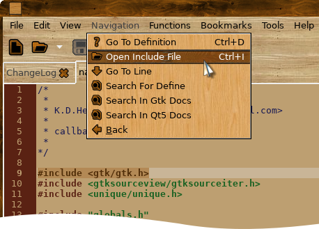
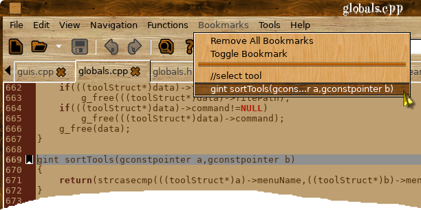
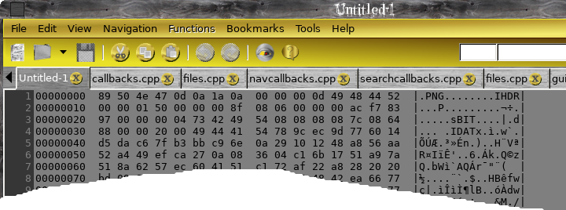
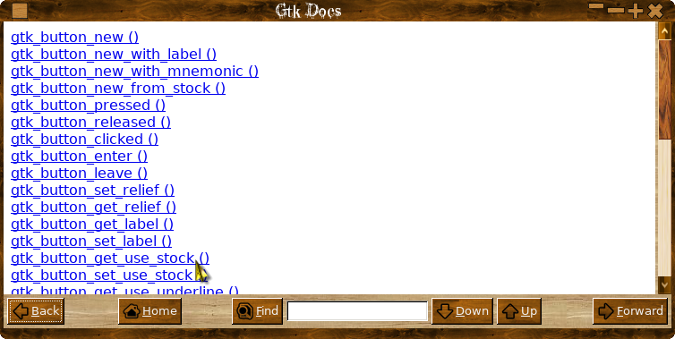
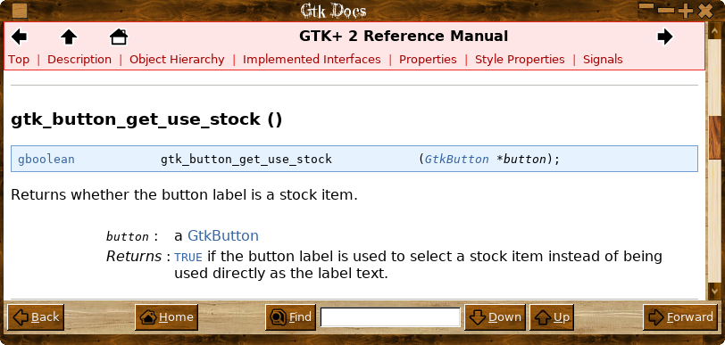

Source code text editor

Why another text editor?
Simple, I didn't like any of the others they were all too flat ( sorry wrong sketch! ), anyway having used gedit for years it was getting increasingly difficult to keep it compiling without loads of gnome dependencies, looking around linux text editors seem to be VERY simple (leafpad) stupidly complex (GVim,Bluefish), trying to be all things to all people.
One of the best text editors I have used is BBEdit but that is only available on the mac, so I bit the bullet and decided to write my own with the best bits from BBEdit ( the name KKEdit is a tip of the hat to BBEdit ), gedit and leafpad. A simple uncluttered interface, no major dependencies, with just the features I use all the time, and TA DAH! KKEdit.
What it's not!
KKEdit is NOT a word processor or a web page editor, it is NOT and IDE! It won't right code for you, it wont insist on inserting brackets ( REALLY annoying! ), it wont force you to use any particular style, it doesn't need you to break all your fingers trying to hit weird and wonderful key combo's and it is not tied to one particular distro, oh yes and it won't cost you a penny!
What it is and does
KKEdit is a deceptivly simple text editor with syntax colouring.
It also has a function menu which allows you to jump instantly to a function definition, a navigation menu which will look in all open files for a function definition and then switch to that tab and go to the relevant line if it can't find a definition in any open files it will do a recursive search from the folder of the currently selected document, you can also highlight a #include directive and it will search for and try to open the file, include files surrounded by <> will be looked for in /usr/include, files surrounded by "" will be looked for in the current folder.
External tools can be added either globally or locally and when run can either replace the currently select text with their ouptut, replace all the files text, be run in a terminal or you can choose to ignore the output form the script, BASH, python and perl can be used for the script language or any interpretor that uses '#' as a comment marker.
A number of simple demo scripts are included in the folder "demotoools" ( good name eh ).
You can drag and drop a file onto the main toolbar/menu to open a file.
Session can be saved and reloaded.
Any amount of bookmarks can be added anywhere, selecting a bookmark from the menu will switch to that tab and move to the appropriate line.
Just type a line number into the edit box on the toolbar to jump straight to that line.
Manual
Simple, I didn't like any of the others they were all too flat ( sorry wrong sketch! ), anyway having used gedit for years it was getting increasingly difficult to keep it compiling without loads of gnome dependencies, looking around linux text editors seem to be VERY simple (leafpad) stupidly complex (GVim,Bluefish), trying to be all things to all people.
One of the best text editors I have used is BBEdit but that is only available on the mac, so I bit the bullet and decided to write my own with the best bits from BBEdit ( the name KKEdit is a tip of the hat to BBEdit ), gedit and leafpad. A simple uncluttered interface, no major dependencies, with just the features I use all the time, and TA DAH! KKEdit.
What it's not!
KKEdit is NOT a word processor or a web page editor, it is NOT and IDE! It won't right code for you, it wont insist on inserting brackets ( REALLY annoying! ), it wont force you to use any particular style, it doesn't need you to break all your fingers trying to hit weird and wonderful key combo's and it is not tied to one particular distro, oh yes and it won't cost you a penny!
What it is and does
KKEdit is a deceptivly simple text editor with syntax colouring.
It also has a function menu which allows you to jump instantly to a function definition, a navigation menu which will look in all open files for a function definition and then switch to that tab and go to the relevant line if it can't find a definition in any open files it will do a recursive search from the folder of the currently selected document, you can also highlight a #include directive and it will search for and try to open the file, include files surrounded by <> will be looked for in /usr/include, files surrounded by "" will be looked for in the current folder.
External tools can be added either globally or locally and when run can either replace the currently select text with their ouptut, replace all the files text, be run in a terminal or you can choose to ignore the output form the script, BASH, python and perl can be used for the script language or any interpretor that uses '#' as a comment marker.
A number of simple demo scripts are included in the folder "demotoools" ( good name eh ).
You can drag and drop a file onto the main toolbar/menu to open a file.
Session can be saved and reloaded.
Any amount of bookmarks can be added anywhere, selecting a bookmark from the menu will switch to that tab and move to the appropriate line.
Just type a line number into the edit box on the toolbar to jump straight to that line.
Manual
Navigation Menu
Functions Menu
Tools Menu
Preferences
Other Features
Get It And Build It
TO BE DONE - PLEASE READ
Navigation Menu
The Navigation menu has five sub-menus - Go To Definition, Open Include File, Go To Line, Search For Define and Search In Gtk-Docs.
To go where a function etc is defined, select it and choose 'Go To Definition' KKEdit will then look in open files for the definition and switch to that page and highlight the appropriate line like so:


As you can see as the definition was not in an open file KKEdit looks for the definition recursively starting from the folder where the file was opened from and if found opening the file and selecting the line with the definition.
The search depth for finding a definition is set in the prefs and defaults to 1 ie only looks for definitions in files in the same folder as any open documents, be careful about setting this too high as it can cause an unwanted delay when right clicking if it has to look in a lot of sub-folders.
You can also open an include file just highlight the line and select Open Include File like so:

Include files are looked for in either /usr/include or the directory the current document is in, depending whether the file name is surrounded by '<>' or ' "" '.
Search for Define will open an entry box and allow you to type in a definition or part of a definition and will try to find it in the usual places opening a file if necessary, the search is case insensitive.
Functions Menu
The Functions menu contains a list of all defined functions, variables and defines that are visible in this file, to jump to the appropriate function definition just select it from the menu like so:

The Functions menu will be updated after saving a file or switching tabs.
Tools Menu
The Tools menu allow you to run an external script ie to open a terminal with the working directory set to the folder where the current file is open:

External tools can either be added globally to /usr/share/KKEdit/tools (if you have installed with --prefix=/usr) or locally in ~/.KKEdit/tools.
External tools are passed three environment variables:
KKEDIT_CURRENTFILE - Path to current document.
KKEDIT_CURRENTDIR - Directory of current document.
KKEDIT_SELECTION - Currently selected text.
KKEDIT_DATADIR - Directory of global folder ( eg /usr/share/KKEdit ).
More variables may be defined later.
External tools can be created by hand or via the 'Tools->New' menu like so:

The placeholders are:
%t - Currently selected text, the same as the $KKEDIT_SELECTION environment variable passed to the command .
%f - Filepath of the current document, the same as the $KKEDIT_CURRENTFILE environment variable passed to the command.
%d - Directory of the current document or ${HOME}, the same as the $KKEDIT_CURRENTDIR environment variable passed to the command.
%i -The location of the globally installed tools, the same as the $KKEDIT_DATADIR environment variable passed to the command .
Commands should be simple commands, compound commands ( ie cd /opt;ls;touch xx) will not be executed properly, if you need to use a complex command create a script and set 'command' to the filepath of your script.
********************
At the moment once a tool has been created you need to edit it by hand if you want to make changes this will change soon.
Preferences

The Prefs file is created ~/.KKEdit/kkedit.rc and will be created/recreated when quitting KKEdit.
Preferences should be set from 'Edit->Preferences'
You can set the command to run an external tool in a terminal from here.
Other Features
Copy filename from tab menu.
Copy filepath from tab menu.
Copy function define.
Go to function definition.
Add bookmark.
Single or multiple instance app.
Open as hexdump.
Find API definition in Gtk Doc's.
Right clicking on a tab allows copying of the document filename or filepath.

The document context menu also contains the 'Go To Definition' function for convenience.
Selecting the definition will copy it to the clipboard.
If there is no valid definition selected the menu item will not be shown.

Any amount of bookmarks can be added, selecting one will switch to that document and line.
Bookmarks are only valid for open documents in the running instance, they are not stored with the 'Save Session' option although that may change.

You can run KKEdit either as a single instance app or as a multiple instance app , set via the prefs menu. Single instances are unique to each workspace.
You can open a file as a hexdump like so:

You can look up an API decleration from any installed gtk-doc's installed by selecting all or part of an API name like so:
And then selecting 'Search In Gtk-Docs' form the Navigation menu or from the right click pop-up menu like so:
And if you have built with the --enable-docviewer option to configure ( the default ) you will get a window pop-up with a list of possible links to the API you want, if there is only one possible link you will go straight to that. ie using the above example:

Click the Link:

Links can be clicked and followed in the Gtk doc viewer, and functions etc can be copied and pasted into your document.
If you had select all of the 'gtk_window_set_title ' API name you would have gone staight to the screen shown.
You can also manually enter a search term in the box and press 'enter' or click 'find'.
Get it here!
KKEdit
Dependencies
A reasonably new Xorg and desktop.
gtk-2.24.13.
gtksourceview-2.11.1.
ctags.
xdg-utils-1.1.0.
Autotools.
libunique-1.1.6
webkitgtk-1.10.x.
webkit is is an optional dependency if you want to build the Gtk-Doc viewer disable by adding --disable-docviewer to ./configure or ./autogen.sh.
If you use a source based distro like LFS or Slackware you should have all(most) of these installed, if you use a prepackaged distro like debian and you have not compiled from source before you may have to install some development packages ie for debian ( this is from memory ) the build-essential package and the -dev packages for gtk2 and
gtksourceview, check your distros documentation and you distros forums for general help on compiling software.
Building
Unpack the tarball,cd into the KKEdit folder and run:
./autogen.sh --prefix=/usr
make
sudo make install
TO BE DONE
1) Make find/replace MUCH more versatile with
2)
3)
4)
5)
6)
7)
8) Improve this help file.
9)
Home